On commence par des exemples simples.
On trace un carré puis le carré qui joint les milieux des cotés etc...
on s’arrête quand les segments à dessiner deviennent trop petits ou quand
on a un dessin de profondeur n (n est le nombre d’étapes necessaires
pour réaliser le dessin).
On tape dans un éditeur de programme (que l’on ouvre avec Alt+p),
puis on valide avec OK :
carres(A,B):={
local L;
L:=carre(A,B);
if (longueur2(A,B)>0.01) {
L:=L,carres(A+(B-A)/2,B+(B-A)*i/2);
}
return L;
};
On tape :
carres(point(-1),point(1)) :
On obtient :
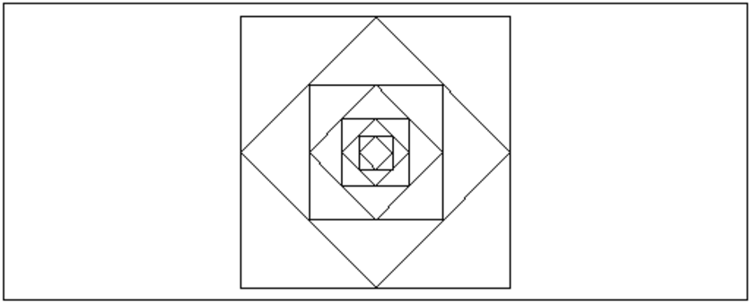
On obtient le dessin des carrés avec le tracé qui est fait du plus
grand au plus petit : le dessin
du carré (-1,1,1+2*i,-1+2*i) puis du carré (0,1+i,i,-1+i)....
bf Remarque
si on tape
carres2(A,B):={
local L;
if (longueur2(A,B)>0.01) {
L:=L,carres2(A+(B-A)/2,B+(B-A)*i/2);
}
L:=L,carre(A,B);
return L;
};
puis :
carres2(-1.0,1.0)
le dessin des carrés ne se fera pas dans le même ordre et se fera
du plus petit au plus grand.
Autre test d’arrêt
On peut avoir besion de connaitre le nombre de n de fois que l’on fait
le ou les appels récursifs pour avoir un dessin de "profondeur" n.
On rajoute pour cela un paramètre qui sera la profondeur.
Dans l’exemple ci-dessus, on tape dans un éditeur de programme (que l’on
ouvre avec Alt+p), puis on valide avec
OK le programme :
carrep(A,B,n):={
local L;
L:=carre(A,B);
if (n==0) return NULL;
L:=L,carrep(A+(B-A)/2,B+(B-A)*i/2,n-1);
return L;
};
On tape :
carrep(-1.0,1.0,5)
On obtient le dessin des carrés du plus grand au plus petit et de profondeur
5
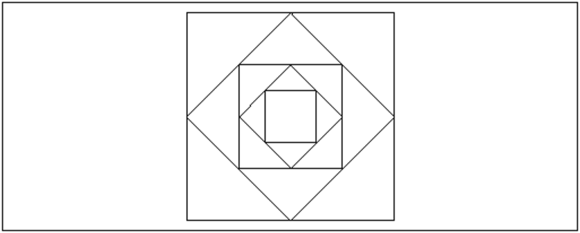
Généralisation
On trace un carré ABCD, puis le carré MNPQ avec :
AM=a*AB,
BN=a*BC,
CO=a*CD,
DP=a*DA,
où a est un nombre réel entre 0 et 1.
carresp(A,B,a):={
local L;
L:=carre(A,B);
if (longueur2(A,B)>0.01) {
L:=L,carresp(A+(B-A)*a,B+(B-A)*i*a,a);
}
return L;
}:;
On tape par exemple :
carresp(-1.0,1.0,0.2)
On obtient :
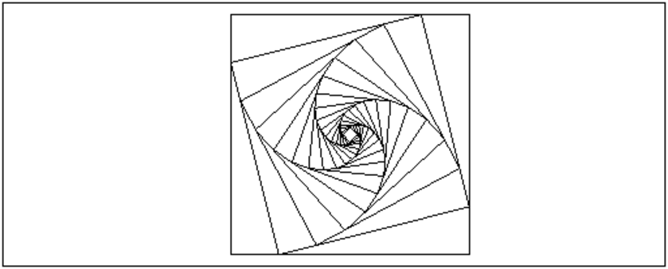
On trace un triangle puis le triangle qui joint les milieux des cotés etc...on s’arrête quand les segments à dessiner deviennent trop petits.
On tape dans un éditeur de programme (que l’on ouvre avec Alt+p),
puis on valide avec OK :
triangles(A,B,C):={
local L;
L:=triangle(A,B,C);
if (longueur2(A,B)>0.01) {
L:=L,triangles(A+(B-A)/2,B+(C-B)/2,C+(A-C)/2);
}
return L};
On tape :
triangles(-2.0,1,2*i)
On obtient le dessin des triangles du plus grand au plus petit :le dessin
du triangle (-2,1,2*i) puis du triangle (-0.5,0.5+i,-1+i,)....
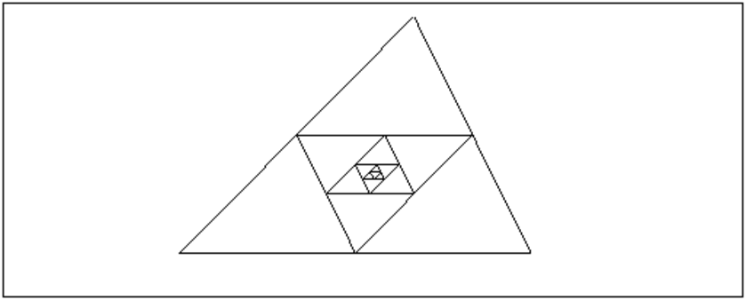
Remarque
si on tape
trianglesp(A,B,C):={
local L;
if (longueur2(A,B)>0.01) {
L:=L,trianglesp(A+(B-A)/2,B+(C-B)/2,C+(A-C)/2);
}
L:=L,triangle(A,B,C);
return L};
On tape :
trianglesp(-2.0,1,2*i)
On obtient le même dessin, mais le tracé des triangles ne se fera pas dans
le même ordre et se feradu plus petit au plus grand.
Généralisation
On trace un triangle ABC, puis le triangle MNP avec :
AM=a*AB,
BN=a*BC,
CO=a*CD,
où a est un nombre réel entre 0 et 1.
trianglea(A,B,C,a):={
local L;
L:=triangle(A,B,C);
if (longueur2(A,B)>0.01) {
L:=L,trianglep(A+(B-A)*a,B+(C-B)*a,C+(A-C)*a,a);
}
return L}:;
On tape par exemple :
trianglea(-2.0,1.0,2*i,0.2)
On obtient :
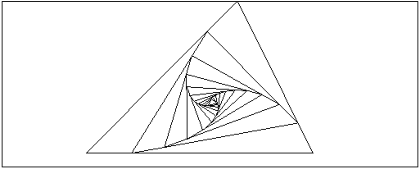
Voici des exemples encore assez simples.
On trace un triangle puis on joint les milieux des cotés.
On obtient ainsi 4 petits triangles semblables au précédent.
On recommence le même processus avec les trois triangles qui ont un angle
commun avec le grand triangle et ainsi de suite.....on s’arrête quand les
segments à dessiner deviennent trop petits.
On tape dans un éditeur de programme (que l’on ouvre avec Alt+p),
puis on valide avec OK :
triangle3(A,B,C):={
local L;
L:=triangle(A,B,C);
if (longueur2(A,B)<0.005) return NULL;
L:=L,triangle3(A,A+(B-A)/2,C+(A-C)/2);
L:=L,triangle3(A+(B-A)/2,B,B+(C-B)/2);
L:=L,triangle3(C+(A-C)/2,B+(C-B)/2,C);
return L;
};
On tape par exemple :
triangle3(-2.0,1.0,2*i)
On obtient :
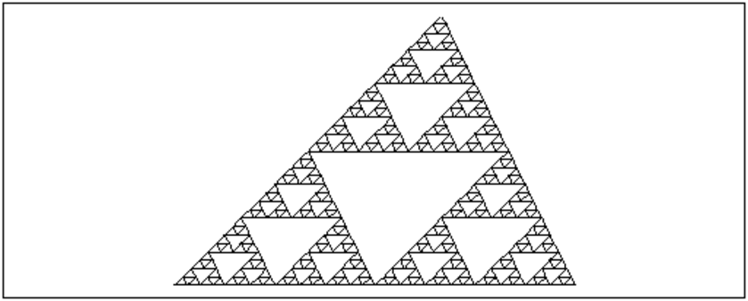
Remarque
Le tracé du triangle ne peut se faire qu’a la fin car il suffit de tracer
les derniers petits triangles on écrit donc dans un éditeur de programme
(que l’on ouvre avec Alt+p), puis on valide avec OK :
trianglep(A,B,C):={
local L:=NULL;
if (longueur2(A,B)<0.01) {return triangle(A,B,C);}
L:=L,trianglep(A,A+(B-A)/2,C+(A-C)/2);
L:=L,trianglep(A+(B-A)/2,B,B+(C-B)/2);
L:=L,trianglep(C+(A-C)/2,B+(C-B)/2,C);
return L;
};
On tape par exemple :
trianglep(-2.0,1.0,2*i)
On obtient le même dessin.
Généralisation
On trace un triangle ABC, puis le triangle MNP avec :
AM=a*AB,
BN=a*BC,
CO=a*CD,
où a est un nombre réel entre 0 et 1.
triangle3p(A,B,C,a):={
local L:=NULL;
if (longueur2(A,B)<0.02) {return triangle(A,B,C);}
L:=L,triangle3p(A,A+(B-A)*a,C+(A-C)*a,a);
L:=L,triangle3p(A+(B-A)*a,B,B+(C-B)*a,a);
L:=L,triangle3p(C+(A-C)*a,B+(C-B)*a,C,a);
return L;
}:;
On tape par exemple :
triangle3p(-2.0,1.0,2*i,0.6)
On obtient :
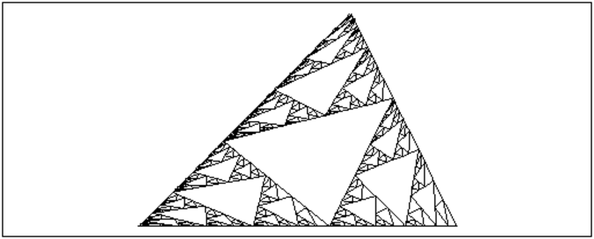
Et avec un autre test d’arrêt en utilisant la profondeur n du dessin :
triangle3an(A,B,C,a,n):={
local L;
if (n==0) {return triangle(A,B,C);}
L:=L,triangle3an(A,A+(B-A)*a,C+(A-C)*a,a,n-1);
L:=L,triangle3an(A+(B-A)*a,B,B+(C-B)*a,a,n-1);
L:=L,triangle3an(C+(A-C)*a,B+(C-B)*a,C,a,n-1);
return L;
}:;
On tape par exemple :
triangle3an(-2.0,1.0,2*i,0.6,3)
0n obtient un dessin de profondeur 3 :
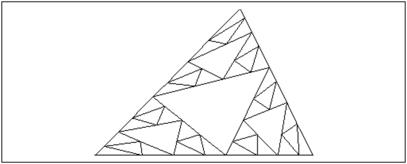
On considère un hexagone de coés de longueur l, on remplace cet hexagone
par 7 hexagones de cotés
de longueur l/3 qui sont :les 6
hexagones ayant un angle commun avec l’hexagone de départ et un septième
hexagone se trouvant au centre comme sur la figure :
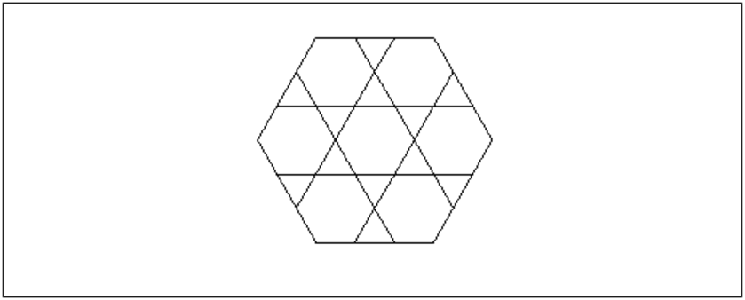
On obtient ainsi 7 petits hexagones semblables au précédent et on
recommence le même processus.
On tape la fonction hexago ou on utilise la commande hexagone de Xcas :
// dessin d'un hexagone
hexago(x,y):={
local a,b,c,L;
a:=x;
b:=y;
L:=NULL;
for (j:=1;j<=6;j++) {
c:=a+(b-a)*exp(evalf(i*pi*2/3));
L:=L,segment(a,c);
b:=a;
a:=c;
}
return L;
}:;
puis on fait un premier appel récursif correspondant à l’hexagone du centre et avec la même itération que dans la fonction hexago, on fait un appel récursif au lieu de tracer un segment pour les hexagones des angles, on tape :
hexagones(a,b,n):={
local j,c,L;
L:=NULL;
if (n==0) {return hexago(a,b);}
c:=a+(b-a)*2/3*exp(evalf(i*pi/3));
// dessin de l'hexagone central
L:=L,hexagones(c,c+(b-a)/3, n-1);
//dessin des 6 hexagones dans les angles
for (j:=1;j<=6;j++) {
c:=a+(b-a)*exp(evalf(i*pi*2/3));
L:=L,hexagones(c,c+(a-c)/3,n-1);
b:=a;
a:=c;
}
return L;};
On tape :
hexagone(point(-1),point(1)),hexagones(-1,1,3)
On obtient :
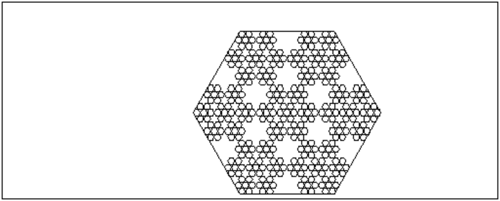
On part d’un polygone régulier P à k sommets et on le remplace par k
polygones réguliers à k sommets de façon à ce que ces k
polygones aient chacun un angle commun avec P et de façon à ce qu’ils
ne se chevauchent pas. Puis on contine le processus et on ne dessine que les
derniers petits polygones.
Par exemple un hexagone H de coté a est remplacé par 6 hexagones de
côtés a/3 obtenus par homothétie de rapport 1/3 et de centre les
sommets de l’hexagone H.
Pour écrire une procédure générale il faut faire un peu de
trigonométrie.
Le calcul du coté h du petit polygone k-régulier doit vérifier :
- si k=3, 4 on a h=(b−a)/2
- si k=5, 6, 7, 8 on a h+hcos(2π/k)=(b−a)/2
- si k=9, 10, 11, 12, 13, 14, 15, 16 on a :
h+hcos(2π/k)+hcos(4π/k)=(b−a)/2
- si p=iquo(k-1,4), on a :
h∑l=0p cos(2pπ/k)=(b−a)/2
On a donc :
s=∑l=0p cos(2pπ/k)=(sin((2p+1)π/k)+sin(π/k))/(2sin(π/k))
donc h=(b−a)/2/s
et on tape :
//napperon de Cantor ou de Sierpinski k=3,4...
//utilise isopolygone(a,b,k) k>0
//ex polyserp(-1-2*i,1-2*i,5,3); polyserp(-2*i,1-2*i,9,2)
polyserp(a,b,k,n):={
local c,h,j,q,p,s,L;
if (n==0) {return isopolygone(a,b,k);}
//pour k=3 ou 4 h:=(b-a)/3;
//pour k=5,6,7,8 h:=(b-a)/2/(cos(evalf(2*pi/k))+1);
//pour autre k il faut calculer s avec la trigo ou avec
//s:=1;for (l:=1;l<=iquo(k-1,4);l++){s:=s+cos(2*l*evalf(pi)/k);}
p:=iquo(k-1,4);
s:=(sin(evalf(pi)/k)+sin((2*p+1)*evalf(pi)/k))/
2/sin(evalf(pi)/k);
for (j:=1;j<=k;j++) {
h:=(b-a)/2/s;
L:=L,polyserp(a,a+h,k,n-1);
c:=a+(b-a)*exp(evalf(i*pi*(k-2)/k));
b:=a;
a:=c;
}
retourne L;
};
On tape :
polyserp(-1-2*i,1-2*i,5,3)
On obtient :
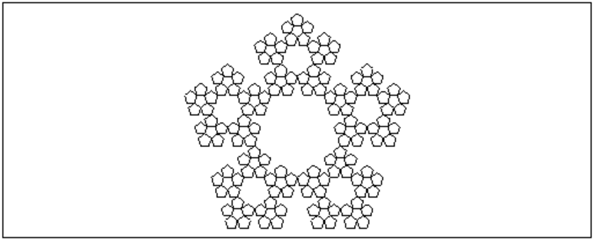
On tape :
polyserp(-2*i,1-2*i,9,2)
On obtient :
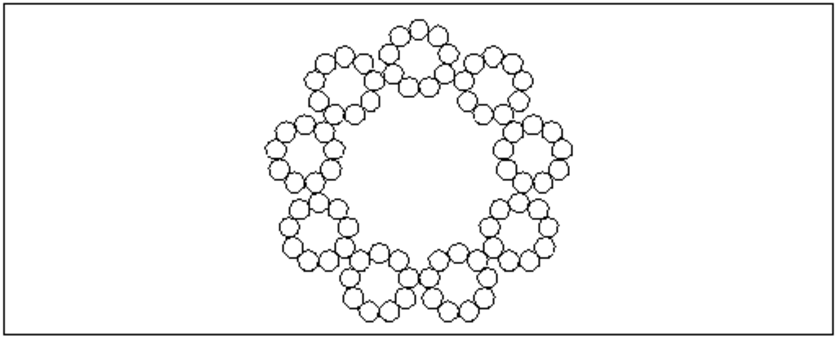
Le programme du dessin d’un polygone régulier à k cotés peut vous aider á comprendre le programme précédent.
// dessin d'un polygone regulier de k cotes
polyreg(x,y,k):={
local a,b,c;
a:=x;
b:=y;
DispG();
for (j:=1;j<=k;j++) {
c:=a+(b-a)*exp(evalf(i*pi*(k-2)/k));
segment(a,c);
b:=a;
a:=c;
}
};
Dans Xcas, pour tracer un polygone régulier, on utilise la commande
isopolygone.
Remarque
Une faute de signe peut vous faire voir de jolis dessins pour k=7,8...et n=2
//utilise polyreg(a,b,k) k>0 k=nb de cotes
//ex polyserr(-2*i,1-2*i,8,2); polyserr(-2*i,1-2*i,9,2)
polyserr(a,b,k,n):={
local c,h,j,q,p,s,L;
L:=NULL;
if (n==0) return isopolygone(a,b,k);
//if (n==0) {return polyreg(a,b,k);}
p:=iquo(k-1,4);
s:=(sin(evalf(pi)/k)-sin((2*p+1)*evalf(pi)/k))/
2/sin(evalf(pi)/k);
for (j:=1;j<=k;j++) {
if ( s!=0) h:=(b-a)/2/s; else h:=(b-a)/3;
L:=L,polyserr(a,a+h,k,n-1);
c:=a+(b-a)*exp(evalf(i*pi*(k-2)/k));
b:=a;
a:=c;
}
return L;
};
On tape :
polyserr(-2*i,1-2*i,8,2)
On obtient :
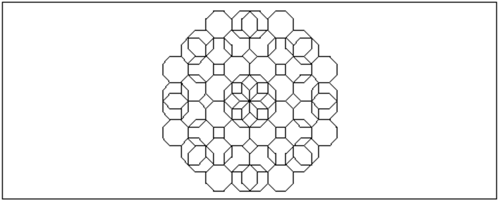
Un autre dessin avec des octogones en traçant un octogone au centre et 8
octogones dans les angles :
polyserp8(a,b,n):={
local c,h,j,q,p,s,k,L;
if (n==0) return isopolygone(a,b,8);
k:=8;
//if (n==0) {return polyreg(a,b,k);}
p:=iquo(k-1,4);
s:=(sin(evalf(pi)/k)+sin((2*p+1)*evalf(pi)/k))/
2/sin(evalf(pi)/k);
h:=(b-a)/2/s;
L:=polyserp8(a+h+i*h*(sqrt(2)+1),a+h*(sqrt(2)+1)+i*h*(sqrt(2)+1),n-1);
for (j:=1;j<=k;j++) {
L:=L,polyserp8(a,a+h,n-1);
c:=a+(b-a)*exp(evalf(i*pi*(k-2)/k));
b:=a;
a:=c;
h:=(b-a)/2/s;
}
return L;
};
On tape :
polyserp8(-2*i,1-2*i,3)
On obtient :
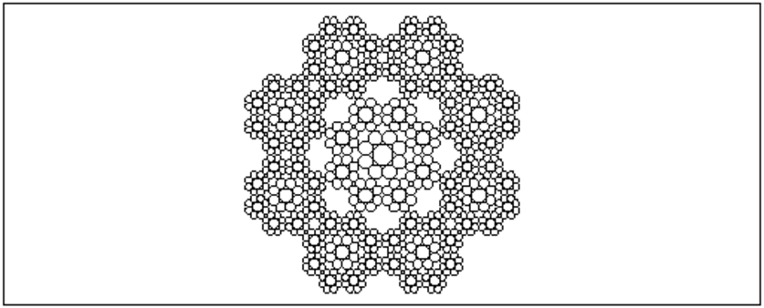
On tape :
Sierpinski(n):={
local T,j,N,x,y,r;
T:=triangle_equilateral(-1/2-i*sqrt(3)/4,1/2-i*sqrt(3)/4,affichage=rouge);
z:=0;
N:=[0$n];
N[0]=<point(0,affichage=point_point)
pour j de 1 jusque n faire
r:=alea(3);
si r==0 alors
x:=(-1/2+x)/2.;
y:=(-sqrt(3)/4+y)/2.;
sinon
si r==1 alors
x:=(1/2+x)/2.;
y:=(-sqrt(3)/4+y)/2.;
sinon
x:=x/2.;
y:=(sqrt(3)/4+y)/2.;
fsi;
fsi;
N[j]=<point(x,y,affichage=point_point)
fpour
retourne(T,N);
}
:;
On tape :
Sierpinski(10000)
On obtient :
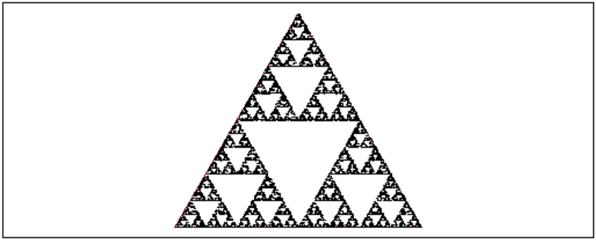
Pour comprendre on reprend le programme :
polyserp(a,b,k,n):={
local c,h,j,q,p,s,L;
if (n==0) {return isopolygone(a,b,k);}
//pour k=3 ou 4 h:=(b-a)/3;
//pour k=5,6,7,8 h:=(b-a)/2/(cos(evalf(2*pi/k))+1);
//pour autre k il faut calculer s avec la trigo ou avec
//s:=1;for (l:=1;l<=iquo(k-1,4);l++){s:=s+cos(2*l*evalf(pi)/k);}
p:=iquo(k-1,4);
s:=(sin(evalf(pi)/k)+sin((2*p+1)*evalf(pi)/k))/
2/sin(evalf(pi)/k);
for (j:=1;j<=k;j++) {
h:=(b-a)/2/s;
L:=L,polyserp(a,a+h,k,n-1);
c:=a+(b-a)*exp(evalf(i*pi*(k-2)/k));
b:=a;
a:=c;
}
retourne L;
}:;
et on tape :
Sierpinski(6),polyserp(-1/2-i*sqrt(3)/4,1/2-i*sqrt(3)/4,3,4)
avec pour Sierpinski(6) 7 gros points aléatoires de couleurs
0,1...6. On a fait 6 tirages qui sont : 2, 1, 1, 1, 0 ,0.
On obtient :
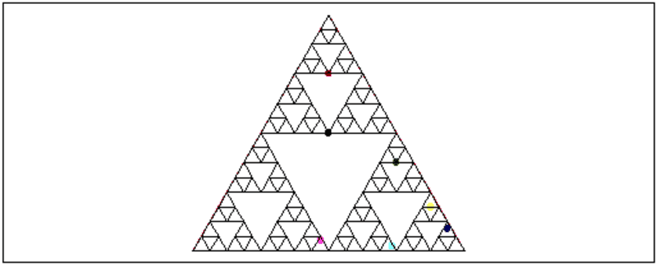
Tous les programmes qui sont dans cette section se trouve dans le fichier :
flocon.cas
On considère un segment AB et on place las points PQR tels que :
3*AP=AB
3*BQ=BA
et le triangle PQR est équilatèral direct.
On remplace alors le tracé du segment AB par le tracé APRQB.
On continue en faisant subir le même traitement aux 4 segments AP,PR,RQ,QB...on s’arrête quand la longueur des segments devient trop petite ou
quand la profondeur est nulle.
Il y a donc 4 appels récursifs.
flocon(A,B):={
local L;
L:=NULL;
if (longueur2(A,B)<0.005) {return segment(A,B);}
L:=L,flocon(A,A+(B-A)/3);
L:=L,flocon(A+(B-A)/3,A+(B-A)/3*(1+exp(i*pi/3)));
L:=L,flocon(A+(B-A)/3*(1+exp(i*pi/3)),A+2*(B-A)/3);
L:=L,flocon(A+2*(B-A)/3,B);
return L;
}:;
On tape par exemple :
flocon(-1.0,1.0)
On obtient :
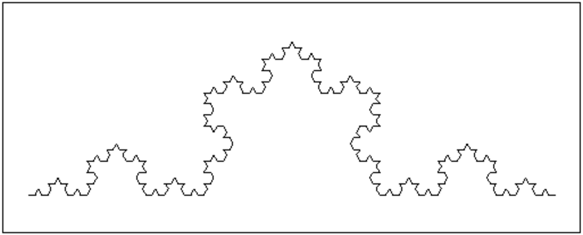
ou avec la profondeur :
floconp(A,B,n):={
local h,L;
L:=NULL;
if (n==0) {return segment(A,B);}
h:=(B-A)/3;
L:=L,floconp(A,A+h,n-1);
L:=L,floconp(A+h,A+h*(1+exp(i*pi/3)),n-1);
L:=L,floconp(A+h*(1+exp(i*pi/3)),A+2*h,n-1);
L:=L,floconp(A+2*h,B,n-1);
return L;
}:;
On tape par exemple :
floconp(-2.0,2.0,5)
On obtient :
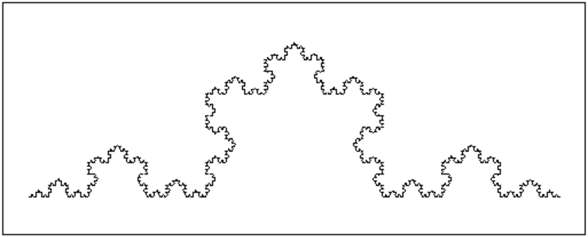
Généralisation
On coupe le segment initial AB en trois en placant P et Q de façon
à avoir :
AP=a*AB
BQ=a*BA
avec 0.25< a <0.5. puis on construit un triangle isocéle PQR tel
que PR=QR=AP . On remplace le segment AB par les segments APRQB et on recommence le processus. Il y a donc 4 appels récursifs.
flocong(A,B,a,n):={
local h,t,L;
L:=NULL;
if (n==0) {return segment(A,B);}
t:=acos((0.5-a)/a);
h:=(B-A)*a;
L:=L,flocong(A,A+h,a,n-1);
L:=L,flocong(A+h,A+h*(1+exp(i*t)),a,n-1);
L:=L,flocong(A+h*(1+exp(i*t)),B-h,a,n-1);
L:=L,flocong(B-h,B,a,n-1);
return L;
}:;
On tape par exemple :
flocong(-2.0,2.0,0.4,4)
On obtient :
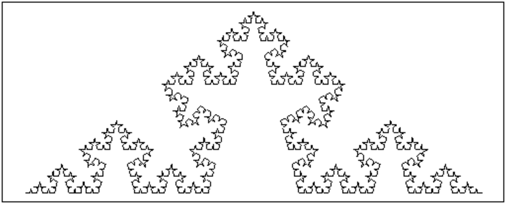
Ces programmes se trouvent dans examples/recur/carre.cxx.
On trace un carré puis puis on partage les cotés de ce carré en trois
partie égales. On obtient ainsi 9 carrés.
On recommence le même processus avec les 8 carrés qui ont un coté
commun avec le grand carré et ainsi de suite.....on s’arrête quand les segments à dessiner deviennent trop petits. Il y a donc 8 appels récursifs.
On tape dans un éditeur de programme (que l’on ouvre avec Alt+p),
puis on valide avec OK :
carre8(A,B):={
local h,L;
L:=carre(A,B);
if (longueur2(A,B)<0.005) return NULL;
h:=(B-A)/3;
L:=L,carre8(A,A+h);
L:=L,carre8(A+h,A+2*h);
L:=L,carre8(A+2*h,B);
L:=L,carre8(A+i*h,A+i*h+h);
L:=L,carre8(A+i*h+2*h,B+i*h);
L:=L,carre8(A+2*i*h,A+2*i*h+h);
L:=L,carre8(A+2*i*h+h,A+2*i*h+2*h);
L:=L,carre8(A+2*i*h+2*h,B+2*i*h);
return L;
}:;
On tape par exemple :
carre8(-1.0,1.0)
On obtient :
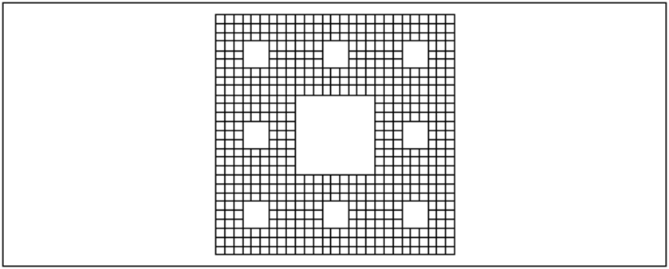
Autre test d’arrêt
On peut avoir besion de connaitre le nombre de n de fois que l’on fait
le ou les appels récursifs pour avoir un dessin de "profondeur" n.
On rajoute pour cela un paramètre qui sera la profondeur.
Dans l’exemple ci-dessus, on tape dans un éditeur de programme (que l’on
ouvre avec Alt+p), puis on valide avec OK le programme :
carre8p(A,B,n):={
local h,L;
h:=(B-A)/3;
L:=carre(A,B);
if (n==0) return NULL;
h:=(B-A)/3;
L:=L,carre8p(A,A+h,n-1);
L:=L,carre8p(A+h,A+2*h,n-1);
L:=L,carre8p(A+2*h,B,n-1);
L:=L,carre8p(A+i*h,A+i*h+h,n-1);
L:=L,carre8p(A+i*h+2*h,B+i*h,n-1);
L:=L,carre8p(A+2*i*h,A+2*i*h+h,n-1);
L:=L,carre8p(A+2*i*h+h,A+2*i*h+2*h,n-1);
L:=L,carre8p(A+2*i*h+2*h,B+2*i*h,n-1);
return L;
}:;
On tape par exemple :
carre8p(-1.0,1.0,4)
On obtient le même dessin
Ces programmes se trouvent dans examples/recur/peano.cxx.
On trace la diagonale AC d’un carré ABCD.
Puis puis on partage les cotés de ce carrés en trois
partie égales. On obtient ainsi 9 carrés.
On remplace alors la diagonale du carré précédent par les
diagonales des 9 carrés de façon à avoir une ligne continue allant de A à C. On recommence le même processus avec les 9 carrés de façon à avoir une ligne continue allant de A à C, et ainsi de suite.....on s’arrête quand les segments à dessiner deviennent trop petits.
On a choisit comme paramètre les affixes des points A et B et d’utiliser la profondeur comme test d’arrêt.
On tape dans un éditeur de programme (que l’on ouvre avec Alt+p),
puis on valide avec OK :
ou on utilise la commande :
read("peano.cas") car ce progrmme se trouve dans le fichier
peano.cas.
//arc qui remplit le carre de cote x,y
peano(x,y,n):={
local u,v,L;
u:=(y-x)/3;
v:=i*u;
L:=NULL;
if (n==0) {return segment(x,y+3*v);}
L:=L,peano(x,x+u,n-1);
L:=L,peano(x+u+v,x+u,n-1);
L:=L,peano(x+2*u,y,n-1);
L:=L,peano(y+v,y+2*v,n-1);
L:=L,peano(x+2*(u+v),x+u+2*v,n-1);
L:=L,peano(x+(u+v),x+u+2*v,n-1);
L:=L,peano(x+2*v,x+2*v+u,n-1);
L:=L,peano(x+3*v+u,x+u+2*v,n-1);
L:=L,peano(x+2*(u+v),y+2*v,n-1);
return L;
}:;
On tape par exemple :
peano(-i,3-i,3)
On obtient :
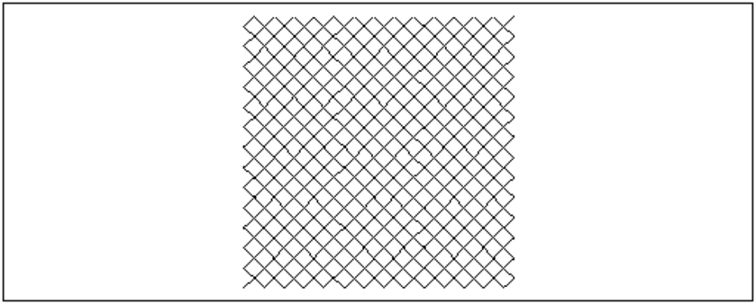
Vous pouvez voir les différentes étapes de la construction en faisant successivement n=1,2,3,4 en utilisant le bouton stop si le tracé est trop long.
Dans ce chapitre on va faire des dessins qui obligent à écrire plusieurs procédures récursives qui s’appellent l’une l’autre.
On considère les trapèzes ABCD rectangle en A et D et tel que AB=2DC=2AD. On dira que l’on a un trapèze droit si l’angle AB,AS=+π/2 et sinon ce sera un trapèze gauche. Voici le programme du dessin du trapèze gauche et du trapèze droit : (le paramètre a est l’affixe de A et b est l’affixe de B)
trapd(a,b):={
local c,d,L;
L:=segment(a,b);
L:=L,segment(a,a+i*(b-a)/2);
L:=L,segment(a+i*(b-a)/2,(a+b)/2+i*(b-a)/2);
L:=L,segment(b,(a+b)/2+i*(b-a)/2);
retourne L;
}:;
trapg(a,b):={
local c,d,L;
L:=segment(a,b);
L:=L,segment(a,a-i*(b-a)/2);
L:=L,segment(a-i*(b-a)/2,(a+b)/2-i*(b-a)/2);
L:=L,segment(b,(a+b)/2-i*(b-a)/2);
retourne L;
}:;
On tape :
trapg(0,10),trapd(10,20)
On obtient :
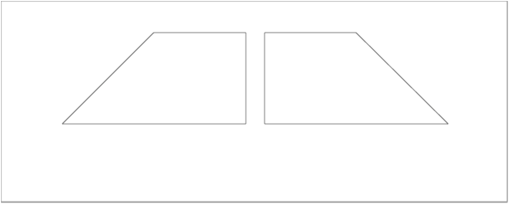
On partage le trapèze droit en 3 trapèzes droits et un trapèze gauche et
le trapèze gauche en 3 trapèzes gauches et un trapèze droit :
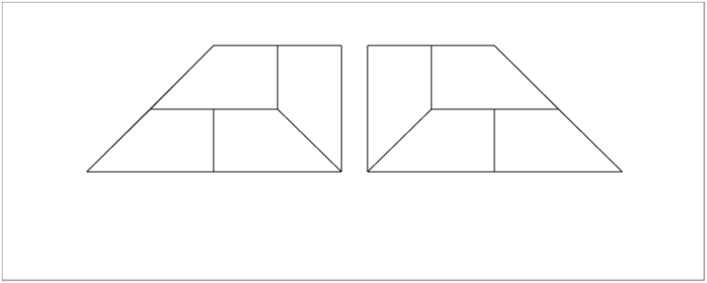
Puis on continue le même processus, on tape :
(a et b sont les affixes de A et de B, n=1 trace un trapèze, n=2
dessine le partage (soit 4 trapèzes), n=3 dessine 16=42 trapèzes et
n=4 en dessine 64=43 etc...)
trapdr(a,b,n):={
local L;
L:=NULL;
si n==0 alors retourne NULL; fsi;
L:=L,trapd(a,b);
L:=L,trapgr((a+b)/2,a,n-1);
L:=L,trapdr(a+i*(b-a)/2,a,n-1);
L:=L,trapdr(a+(b-a)/4+i*(b-a)/4,a+3*(b-a)/4+i*(b-a)/4,n-1);
L:=L,trapdr((a+b)/2,b,n-1);
return L;
}:;
trapgr(a,b,n):={
local L;
L:=NULL;
si n==0 alors return NULL; fsi;
L:=trapg(a,b);
L:=L,trapdr((a+b)/2,a,n-1);
L:=L,trapgr(a-i*(b-a)/2,a,n-1);
L:=L,trapgr(b+3*(a-b)/4+i*(a-b)/4,b+(a-b)/4+i*(a-b)/4,n-1);
L:=L,trapgr((a+b)/2,b,n-1);
return L;
}:;
On tape :
trapgr(10,0,4);trapdr(10,20,4);
On obtient :

Voici un sphinx droit et un sphinx gauche :
sphinxd(x,y):={
local z,u,t,L;
L:=NULL;
z:=x+2*(y-x)/3*exp(evalf(pi)*i/3);
t:= y+(x-y)/3*exp(-evalf(pi)*i/3);
u:=t+(x-y)/3;
L:=L,segment(x,z);
L:=L,segment(z,u);
L:=L,segment(u,t);
L:=L,segment(t,y);
L:=L,segment(y,x);
return L;
}:;
sphinxg(x,y):={
local z,u,t,L;
L:=NULL;
z:=y+2*(x-y)/3*exp(-evalf(pi)*i/3);
t:= x+(y-x)/3*exp(evalf(pi)*i/3);
u:=t+(y-x)/3;
L:=L,segment(y,z);
L:=L,segment(z,u);
L:=L,segment(u,t);
L:=L,segment(t,x);
L:=L,segment(x,y);
return L;
}:;
On tape :
sphinxd(0,1),sphinxg(1.2,2.2)
On obtient :
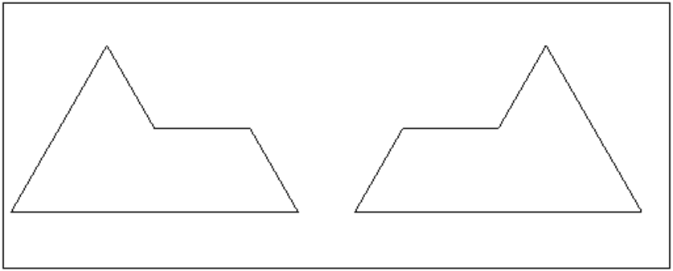
Voici un sphinx droit et ses 4 petits (composé de trois sphinx gauches et
d’un sphinx droit) et un sphinx gauche et ses 4 petits (composé d’un sphinx
gauches et de trois sphinx droit) :
sphinxd4(x,y):={
local z,u,t,L;
L:=NULL;
z:=x+2*(y-x)/3*exp(3.14*i/3);
t:= y+(x-y)/3*exp(-3.14*i/3);
u:=t+(x-y)/3;
L:=L,segment(x,z);
L:=L,segment(z,u);
L:=L,segment(u,t);
L:=L,segment(t,y);
L:=L,segment(y,x);
L:=L,sphinxg(x,(x+y)/2);
L:=L,sphinxg((x+y)/2,y);
L:=L,sphinxg(t,t+(x-y)/2);
L:=L,sphinxd(z,(3*x+z)/4);
return L;
}:;
sphinxg4(x,y):={
local z,u,t,L;
L:=NULL;
z:=y+2*(x-y)/3*exp(-evalf(pi)*i/3);
t:= x+(y-x)/3*exp(evalf(pi)*i/3);
u:=t+(y-x)/3;
L:=L,segment(y,z);
L:=L,segment(z,u);
L:=L,segment(u,t);
L:=L,segment(t,x);
L:=L,segment(x,y);
L:=L,sphinxd(x,(x+y)/2);
L:=L,sphinxd((x+y)/2,y);
L:=L,sphinxd(t+(y-x)/2,t);
L:=L,sphinxg((3*y+z)/4,z);
return L;
}:;
On tape :
sphinxd4(0,1),sphinxg4(1.2,2.2)
On obtient :
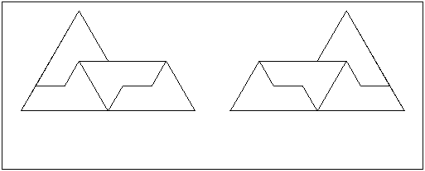
Et voici toute la famille des sphinx droits et toute la famille des sphinx
gauches : (sphinxds(x,y,n) est une fonction récursive qui utilise la
fonction récursive sphinxgs(x,y,n) et sphinxgs(x,y,n) est une
fonction récursive qui utilise la fonction récursive sphinxds(x,y,n)).
sphinxds(x,y,n):={
local z,u,t,L;
if (n==0) return NULL;
z:=x+2*(y-x)/3*exp(evalf(pi)*i/3);
t:= y+(x-y)/3*exp(-evalf(pi)*i/3);
u:=t+(x-y)/3;
L:=NULL;
L:=L,segment(x,z);
L:=L,segment(z,u);
L:=L,segment(u,t);
L:=L,segment(t,y);
L:=L,segment(y,x);
L:=L,sphinxgs(x,(x+y)/2,n-1);
L:=L,sphinxgs((x+y)/2,y,n-1);
L:=L,sphinxgs(t,t+(x-y)/2,n-1);
L:=L,sphinxds(z,(3*x+z)/4,n-1);
return L;
}:;
sphinxgs(x,y,n):={
local z,u,t,p,L;
if (n==0) return NULL;
L:=NULL;
z:=y+2*(x-y)/3*exp(-evalf(pi)*i/3);
t:= x+(y-x)/3*exp(evalf(pi)*i/3);
u:=t+(y-x)/3;
L:=L,segment(y,z);
L:=L,segment(z,u);
L:=L,segment(u,t);
L:=L,segment(t,x);
L:=L,segment(x,y);
L:=L,sphinxds(x,(x+y)/2,n-1);
L:=L,sphinxds((x+y)/2,y,n-1);
L:=L,sphinxds(t+(y-x)/2,t,n-1);
L:=L,sphinxgs((3*y+z)/4,z,n-1);
return L;
}:;
On tape :
sphinxds(0,1,4),sphinxgs(1.2,2.2,4)
On obtient :
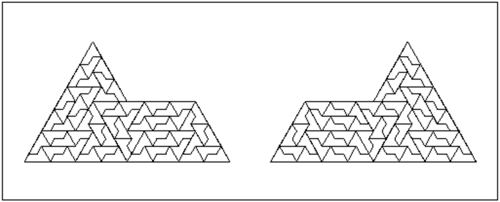
ou encore en ne dessinant que la dernière génération du sphinx droit ou
la dernière génération du sphinx gauche :
sphindps(-2,2,4) met 0.52s alors que sphinds(-2,2,4) met 0.83s
sphinxdps(x,y,n):={
local z,u,t,L;
L:=NULL;
if (n==1) {return sphinxd(x,y);}
z:=x+2*(y-x)/3*exp(evalf(pi)*i/3);
t:= y+(x-y)/3*exp(-evalf(pi)*i/3);
u:=t+(x-y)/3;
L:=L,sphinxgps(x,(x+y)/2,n-1);
L:=L,sphinxgps((x+y)/2,y,n-1);
L:=L,sphinxgps(t,t+(x-y)/2,n-1);
L:=L,sphinxdps(z,(3*x+z)/4,n-1);
return L;
}:;
sphinxgps(x,y,n):={
local z,u,t,p,L;
L:=NULL;
if (n==1) {return sphinxg(x,y);}
z:=y+2*(x-y)/3*exp(-evalf(pi)*i/3);
t:= x+(y-x)/3*exp(evalf(pi)*i/3);
u:=t+(y-x)/3;
L:=L,sphinxdps(x,(x+y)/2,n-1);
L:=L,sphinxdps((x+y)/2,y,n-1);
L:=L,sphinxdps(t+(y-x)/2,t,n-1);
L:=L,sphinxgps((3*y+z)/4,z,n-1);
return L;
}:;
On tape :
sphinxdps(0,1,4),sphinxgps(1.2,2.2,4)
On obtient le même dessin que précédemment.
Mais si on remplace dans le sphinx droit, un sphinx gauche par un segment et
dans le sphinx gauche, un sphinx droit par un segment on n’obtient pas la
même chose !!!
sphinxdpst(x,y,n):={
local z,u,t,L;
L:=NULL;
if (n==1) return sphinxd(x,y);
z:=x+2*(y-x)/3*exp(evalf(pi)*i/3);
t:= y+(x-y)/3*exp(-evalf(pi)*i/3);
u:=t+(x-y)/3;
L:=L,sphinxgpst(x,(x+y)/2,n-1);
L:=L,sphinxgpst((x+y)/2,y,n-1);
L:=L,segment(t,t+(x-y)/3);
L:=L,sphinxdpst(z,(3*x+z)/4,n-1);
return L;
}:;
sphinxgpst(x,y,n):={
local z,u,t,p,L;
L:=NULL;
if (n==1) return sphinxg(x,y);
z:=y+2*(x-y)/3*exp(-evalf(pi)*i/3);
t:= x+(y-x)/3*exp(evalf(pi)*i/3);
u:=t+(y-x)/3;
L:=L,sphinxdpst(x,(x+y)/2,n-1);
L:=L,sphinxdpst((x+y)/2,y,n-1);
L:=L,segment(t+(y-x)/3,t);
L:=L,sphinxgpst((3*y+z)/4,z,n-1);
return L;
}:;
On tape :
sphinxdpst(0,1,4),sphinxgpst(1.2,2.2,4)
On obtient :
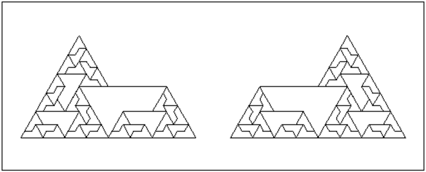
On se donne deux points A et B (ou deux nombres complexes a et b qui
sont l’affixe de ces points) et on considère le carré ACBD direct ayant
pour diagonale AB.
Le segment AB peut donner naissance à un dragon gauche, pour cela, on
remplace le segment AB par les deux côtés
AD et DB du carré ACBD situé à gauche du vecteur AB ou,
le segment AB peut donner naissance à un dragon droit, pour cela, on
remplace le segment AB par les deux côtés
AC et CB du carré ACBD situé à droite du vecteur AB.
Pour la fabrication du dragon gauche, ces deux segments sont considérés
comme allant donner naissance à un dragon gauche (AD) et à un dragon
droit (DB) et
pour la fabrication du dragon droit, ces deux segments sont considérés
comme allant donner naissance à un dragon gauche (AC) et à un dragon
droit (CB).
On a :
b−c=i*(a−c) et b−d=−i*(a−d) donc :
c=(b−i*a)*(1+i)/2 et d=(b+i*a)*(1−i)/2.
On écrit donc en prenant comme test d’arrêt la profondeur n c’est à
dire le nombre de générations.
// dessine un dragon dragong(-i,2+i,10)
//x=a,y=b et d=u
dragong(x,y,n):={
local u,L;
L:=NULL;
if (n==0){return segment(x,y);}
u:=(y+i*x)*(1-i)/2;
L:=L,dragong(x,u,n-1);
L:=L,dragond(u,y,n-1);
return L;
}:;
// dessine un dragon dragond(-i,2+i,10)
//x=a,y=b et c=u
dragond(x,y,n):={
local u,L;
L:=NULL;
if (n==0){return segment(x,y);}
u:=(y-i*x)*(1+i)/2;
L:=L,dragong(x,u,n-1);
L:=L,dragond(u,y,n-1);
return L;
}:;
On tape :
dragong(-i,2+i,10)
On obtient :
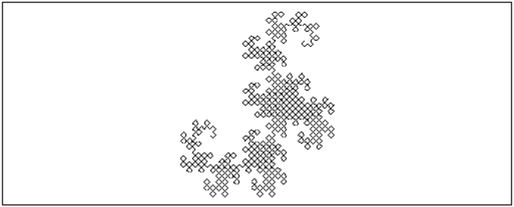
Remarque
Il est facile d’obtenir la courbe du dragon en prenant une longue bande de
papier que l’on plie n fois sur elle même, toujours dans le même sens.
Lorsqu’on a pris soin de bien marquer les plis, on obtient un dragon
lorsqu’on déplie la bande en disposant les plis à angle droit.
Ce n’est pas tout à fait ce que l’on a programmer car dans le programme à
chaque étape on multiplie la longueur du dragon par √2.
Sauriez vous programmer le dragon de la bande de papier ?
Voici la solution : on remarquera que le dragon droit est réalisé par la deuxième moitié de la bande de papier et donc la fonction dragonpapierd est la fonction dragonpapierg en changeant gauche en droite, et en commençant par la dernière instruction.
dragonpapierg(x,y,n):={
local u,v,a,b;
DispG();
if (n==0){segment(x,y);return y;}
u:=x+(y-x)/2;
a:=dragonpapierg(x,u,n-1);
v:=a+(y-x)*i/2;
b:=dragonpapierd(a,v,n-1);
return b
}:;
dragonpapierd(x,y,n):={
local u,v,a,b;
DispG();
if (n==0){segment(x,y); return y;}
v:=x+(y-x)*i/2;
b:=dragonpapierg(x,v,n-1);
u:=b+(y-x)/2;
a:=dragonpapierd(b,u,n-1);
return a;
}:;
On tape :
dragonpapierg(-3.0,13,5)
On obtient le dragon dans l’écran DispG :
Voici une autre solution où on repère l’arrivée et la direction du dernier trait. Dans ce cas on connait le départ et la direction de départ du dragon droit....mais c’est nettement plus compliqué.
dragonpaperg(x,y,n):={
local u,v,a,b;
DispG();
if (n==0){segment(x,y); return (x,y);}
u:=x+(y-x)/2;
a:=dragonpaperg(x,u,n-1);
v:=a[1]+abs((y-x)/(a[1]-a[0]))*(a[1]-a[0])*i/2;
b:=dragonpaperd(a[1],v,n-1);
return b;
}:;
dragonpaperd(x,y,n):={
local u,v,a,b;
DispG();
if (n==0){segment(x,y); return (x,y);}
u:=x+(y-x)/2;
a:=dragonpaperg(x,u,n-1);
v:=a[1]-abs((y-x)/(a[1]-a[0]))*(a[1]-a[0])*i/2;
b:=dragonpaperd(a[1],v,n-1);
return b;
}:;
On tape par exemple :
dragonpaperg(-3,13,5)
On obtient le dragon dans l’écran DispG.
Parmi les nombreuses courbes inventées par Péano on va en décrire deux
qui sont des courbes rècursives formées par des arcs de cercle.
Ces programmes se trouvent dans examples/recur/peano.cxx
On écrit la fonction arcg (resp arcd) qui dessine des arcs définit par le début de l’arc, la fin de l’arc, et de mesure π/3 (resp −π/3).
//arc x y de mesure +pi/3
arcg(x,y):={
return arc(x,y,pi/3);
};
//arc x y de de mesure -pi/3
arcd(x,y):={
return arc(x,y,-pi/3);
}:;
Puis on écrit la fonction peanog (resp peanod) :
Soient deux points A d’affixe a et B d’affixe b.
Pour la fonction peanog, on débute par l’arc
AB de mesure π/3, situé sur le cercle de centre Cg d’affixe
cg=(b−a*exp(i*π/3))*(1−exp(−i*π/3)) que l’on appellera arcg.
Pour la fonction peanod, on débute par l’arc
AB de mesure −π/3, situé sur le cercle de centre Cd d’affixe
cd=(b−a*exp(−i*π/3))*(1−exp(i*π/3)) que l’on appellera arcd.
On remplace ensuite arcg (resp arcd) par 13 arcs de mesure
π/3 ou de mesure −π/3 selon le dessin que l’on obtient en tapant :
peanog(-2-2*i,2-2*i,1) (resp peanod(-2-2*i,2-2*i,1)).
Ces deux figures sont symétriques.
Et on continue en appliquant le même traitement à chacun de ses 13 arcs
en remplacant les arcg (resp arcd) par 13 arcs.
// courbe de peano avec 13 arcs
//par ex peanod(-2-2*i,2-2*i,3)
peanod(x,y,n):={
local c1,b,c,d,e1,f,g,h,i1,j,k,l,m,L;
L:=NULL;
if (n==0) {return arc(x,y,-pi/3);}
c1:=x+(y-x)*exp(evalf(pi)*2*i/3)/3;
b:=x+(y-x)/3*exp(evalf(pi)*i/3);
c:=x+(y-x)/3*2*exp(evalf(pi)*i/3);
d:=c+(y-x)/3;
e1:=b+2*(y-x)/3;
f:=c1+(y-x)*(15+i*sqrt(3))/18;
g:=c1+(y-x)*(6+i*sqrt(3))/9;
h:=f-(y-x)/3;
i1:=h-i*(y-x)/9*sqrt(3);
j:=i1+(y-x)/3;
k:=g-i*2*(y-x)/9*sqrt(3);
l:=x+(y-x)/3;
m:=x+2*(y-x)/3;
L:=L,peanog(x,b,n-1);
L:=L,peanod(b,c,n-1);
L:=L,peanod(c,d,n-1);
L:=L,peanod(d,e1,n-1);
L:=L,peanod(e1,f,n-1);
L:=L,peanog(f,g,n-1);
L:=L,peanog(g,h,n-1);
L:=L,peanog(h,i1,n-1);
L:=L,peanod(i1,j,n-1);
L:=L,peanod(j,k,n-1);
L:=L,peanog(k,l,n-1);
L:=L,peanog(l,m,n-1);
L:=L,peanod(m,y,n-1);
return L;
}:;
peanog(x,y,n):={
local c1,b,c,d,e1,f,g,h,i1,j,k,l,m,L;
L:=NULL;
if (n==0) {return arc(x,y,pi/3);}
c1:=x+(y-x)*exp(evalf(-2*pi)*i/3)/3;
b:=x+(y-x)/3*exp(evalf(-pi)*i/3);
c:=x+(y-x)/3*2*exp(evalf(-pi)*i/3);
d:=c+(y-x)/3;
e1:=b+2*(y-x)/3;
f:=c1+(y-x)*(15-i*sqrt(3))/18;
g:=c1+(y-x)*(6-i*sqrt(3))/9;
h:=f-(y-x)/3;
i1:=h+i*(y-x)/9*sqrt(3);
j:=i1+(y-x)/3;
k:=g+i*2*(y-x)/9*sqrt(3);
l:=x+(y-x)/3;
m:=x+2*(y-x)/3;
L:=L,peanod(x,b,n-1);
L:=L,peanog(b,c,n-1);
L:=L,peanog(c,d,n-1);
L:=L,peanog(d,e1,n-1);
L:=L,peanog(e1,f,n-1);
L:=L,peanod(f,g,n-1);
L:=L,peanod(g,h,n-1);
L:=L,peanod(h,i1,n-1);
L:=L,peanog(i1,j,n-1);
L:=L,peanog(j,k,n-1);
L:=L,peanod(k,l,n-1);
L:=L,peanod(l,m,n-1);
L:=L,peanog(m,y,n-1);
return L;
}:;
On tape :
peanod(-2-2*i,2-2*i,3)
On obtient :
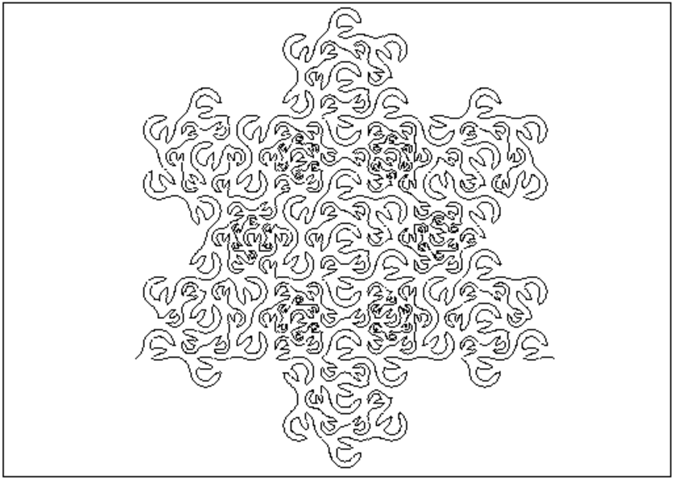
On va maintenant décrire la courbe de Péano ternaire qui remplit un carré
direct de coté XY, en étant C1 .
Soient x est l’affixe de X et y est l’affixe de Y.
Le dessin de base est obtenu en tapant:
bases(x,y)
il est composé de 8 arcs de cercle de mesure π/2 ou de mesure −π/2
et débute au point A d’affixe a:=x+(y−x)/6*1+i) et se termine au point
K d’affixe k, symétrique de A par rapport au centre du carré.
Á partir de ce dessin de base on fait la figure un :
un(x,y)
qui est composée d’un arc de mesure π/2 commençant au point
d’affixe :
a−(y−x)/3 et se terminant au point A suivi du dessin de base.
Á partir de ce dessin de base on fait la figure deux :
deux(x,y)
qui est composée d’un arc de mesure π/2 commençant au point
d’affixe :
a−i*(y−x)/3 et se terminant au point A suivi du dessin de base.
On partage le carré en 9 petits carrés et dans chacun des petits carrés
on trace la figure de base ou la figure de baseun ou la figure de basedeux de façon à obtenir une ligne continue etc....
On écrit ensuite les procédures :
peano0 qui débute par la figure bases,
peano1 qui débute par la figure un,
peano2 qui débute par la figure de deux,
Taper par exemple peano0(-1,2,1) pour voir l’étape 1.
//motif de base
bases(x,y):={
local a,b,c,d,e1,f,g,h,i1,k,L;
L:=NULL;
h:=(y-x)/3;
a:=x+h/2+i*h/2;
b:=a+i*h;
c:=b+i*h;
d:=c+h
e1:=b+h;
f:=a+h;
g:=f+h;
k:=e1+h;
i1:=d+h;
L:=L,arc(a,b,pi/2);
L:=L,arc(c,b,pi/2);
L:=L,arc(d,c,pi/2);
L:=L,arc(e1,d,pi/2);
L:=L,arc(e1,f,pi/2);
L:=L,arc(f,g,pi/2);
L:=L,arc(g,k,pi/2);
L:=L,arc(i1,k,pi/2);
return L;
}:;
//un arc et le motif de base
un(x,y):={
local h,a,L;
L:=NULL;
h:=(y-x)/3;
a:=x+h/2+i*h/2;
L:=L,arc(a-h,a,pi/2);
L:=L,bases(x,y);
return L;
}:;
//un autre arc et le motif de base
deux(x,y):={
local h,a,L;
L:=NULL;
h:=(y-x)/3;
a:=x+h/2+i*h/2;
L:=L,arc(a,a-h*i,pi/2);
L:=L,bases(x,y);
return L;}:;
//courbe qui remplit un carre debute par le motif bases
// ex peano0(-1,2,1) ou peano0(-1,2,3)
// utilise bases un deux peano1 peano2
peano0(x,y,n):={
local a,h,L;
if (n==0) {return bases(x,y);}
L:=NULL;
h:=(y-x)/3;
a:=x+h;
L:=L,peano0(x,a,n-1);
L:=L,peano2(a+i*h,a,n-1);
L:=L,peano1(a+h,y,n-1);
L:=L,peano1(y+i*h,y+2*i*h,n-1);
L:=L,peano1(a+h+2*i*h,a+2*i*h,n-1);
L:=L,peano2(a+i*h,a+2*i*h,n-1);
L:=L,peano2(x+2*i*h,a+2*i*h,n-1);
L:=L,peano2(a+3*i*h,a+2*i*h,n-1);
L:=L,peano1(a+h+2*i*h,y+2*i*h,n-1);
return L;
}:;
//courbe qui remplit un carre debute par le motif un
// ex peano1(-1,2,1)
// utilise bases un deux peano2
peano1(x,y,n):={
local a,h,L;
if (n==0) {return un(x,y);}
L:=NULL;
h:=(y-x)/3;
a:=x+h;
L:=L,peano1(x,a,n-1);
L:=L,peano2(a+i*h,a,n-1);
L:=L,peano1(a+h,y,n-1);
L:=L,peano1(y+i*h,y+2*i*h,n-1);
L:=L,peano1(a+h+2*i*h,a+2*i*h,n-1);
L:=L,peano2(a+i*h,a+2*i*h,n-1);
L:=L,peano2(x+2*i*h,a+2*i*h,n-1);
L:=L,peano2(a+3*i*h,a+2*i*h,n-1);
L:=L,peano1(a+h+2*i*h,y+2*i*h,n-1);
return L;
}:;
//courbe qui remplit un carre debute par le motif deux
// ex peano2(-1,2,1)
// utilise bases un deux peano1
peano2(x,y,n):={
local a,h,L;
if (n==0) {return deux(x,y);}
L:=NULL;h:=(y-x)/3;
a:=x+h;
L:=L,peano2(x,a,n-1);
L:=L,peano2(a+i*h,a,n-1);
L:=L,peano1(a+h,y,n-1);
L:=L,peano1(y+i*h,y+2*i*h,n-1);
L:=L,peano1(a+h+2*i*h,a+2*i*h,n-1);
L:=L,peano2(a+i*h,a+2*i*h,n-1);
L:=L,peano2(x+2*i*h,a+2*i*h,n-1);
L:=L,peano2(a+3*i*h,a+2*i*h,n-1);
L:=L,peano1(a+h+2*i*h,y+2*i*h,n-1);
return L;
}:;
On tape :
peano0(-1,2,3)
On obtient :
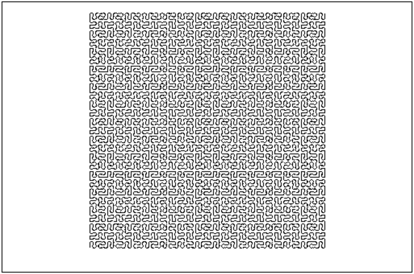
Voici les programmes composées de 4 fonctions, qui dessine la courbe de Hilbert dans l’écran DispG :
//courbe de hilbert par exemple hilg(-2,0,4) est
//compos\'e par 4 morceaux hilg hild berg et berd
//ou hild(0,2,4) ou berg(2,2-2*i,4) ou berd(2,2-2*i,4)
//le morceau 1
hilg(x,y,n):={
local u,v,a,b;
DispG();
if (n==0) {segment(x,y);return 0;}
u:=(y-x)/2;
v:=u*i;
hild(x,x+v,n-1);
hilg(x+v,x+v+u,n-1);
a:=berg(x+v+u,x+u,n-1);
b:=berd(a,a+u,n-1);
};
//le morceau 2
hild(x,y,n):={
local u,v,a,b;
DispG();
if (n==0) {segment(x,y);return 0;}
u:=(y-x)/2;
v:=u*i;
hilg(x,x-v,n-1);
hild(x-v,x-v+u,n-1);
b:=berd(x-v+u,x+u,n-1);
a:=berg(b,b+u,n-1);
};
//le morceau 3
berg(x,y,n):={
local u,v,b;
DispG();
if (n==0) {segment(x,y);return y;}
v:=(x-y)/2;
u:=-v*i;
hild(x,x+v,n-1);
hilg(x+v,x+v+u,n-1);
b:=berg(x+v+u,x+u,n-1);
hild(b,b-v,n-1);
return(b-v);
};
//le morceau 4
berd(x,y,n):={
local u,v,a;
DispG();
if (n==0) {segment(x,y);return y;}
v:=(x-y)/2;
u:=-v*i;
hilg(x,x+v,n-1);
hild(x+v,x+v-u,n-1);
a:=berd(x+v-u,x-u,n-1);
hilg(a,a-v,n-1);
return a-v;
};
Voici les programmes composées de 4 fonctions, qui dessine la courbe de Hilbert dans l’écran de réponse :
hilg(x,y,n):={
local u,v,a,b,L;
L:=NULL;
if (n==0) {return segment(x,y);}
u:=(y-x)/2;
v:=u*i;
L:=L,hild(x,x+v,n-1);
L:=L,hilg(x+v,x+v+u,n-1);
a:=berg(x+v+u,x+u,n-1);
L:=L,tail(a);
a:=a[0];
b:=berd(a,a+u,n-1);
L:=L,tail(b);
b:=b[0];
return L;
}:;
//le morceau 2
hild(x,y,n):={
local u,v,a,b,L;
L:=NULL;
if (n==0) {return segment(x,y);}
u:=(y-x)/2;
v:=u*i;
L:=L,hilg(x,x-v,n-1);
L:=L,hild(x-v,x-v+u,n-1);
b:=berd(x-v+u,x+u,n-1);
L:=L,tail(b);
b:=b[0];
a:=berg(b,b+u,n-1);
L:=L,tail(a);
a:=a[0];
return L;
}:;
//le morceau 3
berg(x,y,n):={
local u,v,b,L;
L:=NULL;
if (n==0) {return y,segment(x,y);}
v:=(x-y)/2;
u:=-v*i;
L:=L,hild(x,x+v,n-1);
L:=L,hilg(x+v,x+v+u,n-1);
b:=berg(x+v+u,x+u,n-1);
L:=L,tail(b);
b:=b[0];
L:=L,hild(b,b-v,n-1);
return (b-v),L;
}:;
//le morceau 4
berd(x,y,n):={
local u,v,a,L;
L:=NULL;
if (n==0) {return y,segment(x,y);}
v:=(x-y)/2;
u:=-v*i;
L:=L,hilg(x,x+v,n-1);
L:=L,hild(x+v,x+v-u,n-1);
a:=berd(x+v-u,x-u,n-1);
L:=L,tail(a);
a:=a[0];
L:=L,hilg(a,a-v,n-1);
return a-v,L;
}
:;
On tape :
hilg(-2,0,4)
On obtient :
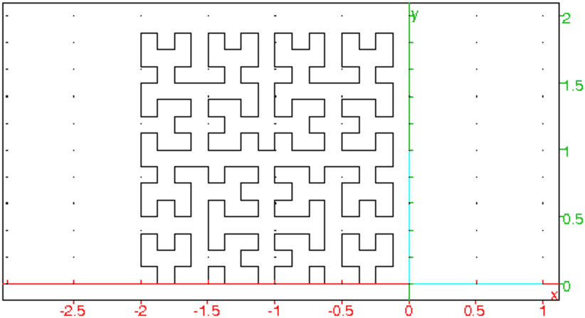
On tape :
hilg(-2,0,5)
On obtient :
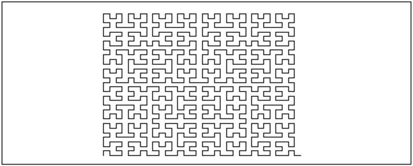
//gosper(-2-2*i,2-2*i,2)ou gosper(-2-2*i,2-2*i,3)
gosper(x,y,n):={
local a,b,c,d,f,g,L;
L:=NULL;
if (n==0) return segment(x,y);
a:=x+(y-x)/sqrt(7)*exp(evalf(-i*acos(5*sqrt(7)/14)));
c:=x+(a-x)*exp(evalf(i*pi/3));
b:=c+a-x;
d:=c+(a-x)*exp(evalf(2*i*pi/3));
f:=d+2*(a-x);
g:=(d+f)/2;
L:=L,gosper(x,a,n-1);
L:=L,gosper(b,a,n-1);
L:=L,gosper(c,b,n-1);
L:=L,gosper(c,d,n-1);
L:=L,gosper(d,g,n-1);
L:=L,gosper(g,f,n-1);
L:=L,gosper(y,f,n-1);
};
On tape :
gosper(-2-2*i,2-2*i,3)
On obtient :
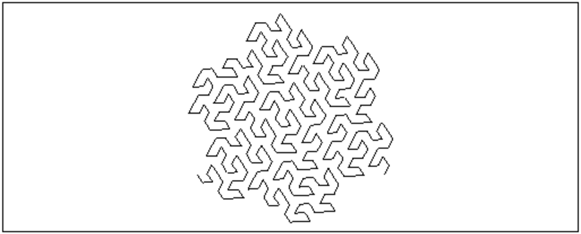
On tape :
gosper(-2-2*i,2-2*i,4)
On obtient :
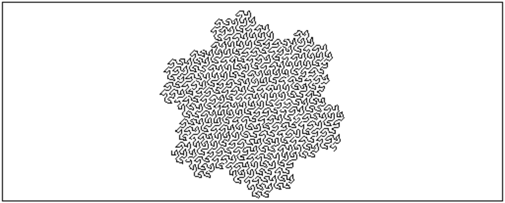
Voici des sapins :
//Voici des sapins....sapin(0,2*i)
sapin(x,y):={
local L;
L:=NULL;
if (abs(x-y)<0.05) {return segment(x,y);}
L:=L,sapin(x,x+(y-x)*0.5*exp(i));
L:=L,sapin(x,x+(y-x)*0.5*exp(-i));
L:=L,segment(x,(3*x+y)/4);
L:=L,sapin((3*x+y)/4,y);
return L;
}:;
On tape : sapin(0,2*i)
On obtient :
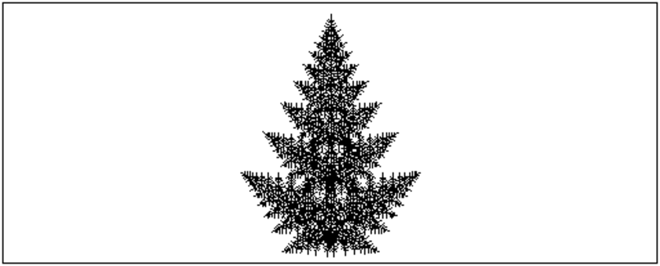
Voici des fleurs :
//Voici des fleurs....fleur(0,2*i)
fleur(x,y):={
local L;
L:=NULL;
if (abs(x-y)<0.05) {return segment(x,y),cercle(y,(y-x)*0.3);}
L:=L,segment(x,y),cercle(y,(y-x)*0.3),cercle(y,(y-x)*0.2);
L:=L,fleur(x,x+(y-x)*0.5*exp(i*0.5));
L:=L,fleur(x,x+(y-x)*0.5*exp(-i*0.5));
}:;
On tape : fleur(0,2*i)
On obtient :
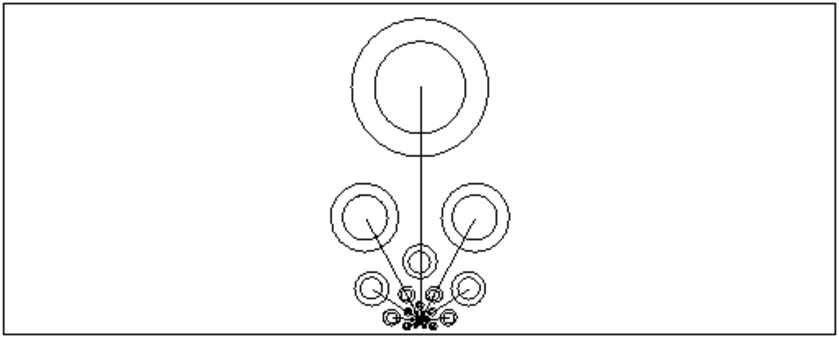
Voici des arbres :
arbre1(x,y):={
local L;
L:=NULL;
if (abs(x-y)<0.1) {return segment(x,y);}
L:=L,segment(x,(x+y)/2);
L:=L,arbre1((x+y)/2,(x+y)/2+(y-x)*0.5*exp(i*0.5));
L:=L,arbre1((x+y)/2,(x+y)/2+(y-x)*0.5*exp(-i*0.5));
return L;
}:;
On tape : arbre1(0,2*i)
On obtient :

et des arbres moins déplumés :
arbre2(x,y):={
local L;
L:=NULL;
if (abs(x-y)<0.1) {return segment(x,y);}
L:=L,segment(x,(x+y)/2);
L:=L,arbre2((x+y)/2,(x+y)/2+(y-x)*0.5*exp(i*0.5));
L:=L,arbre2((x+y)/2,(x+y)/2+(y-x)*0.5*exp(-i*0.5));
L:=L,arbre2((x+y)/2,(x+y)/2+(y-x)*0.5*exp(i));
L:=L,arbre2((x+y)/2,(x+y)/2+(y-x)*0.5*exp(-i));
return L;
}:;
On tape : arbre2(0,2*i)
On obtient :
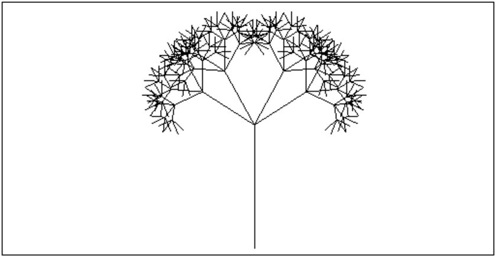
et un epineux :
arbre3(x,y):={
local L;
L:=NULL;
if (abs(x-y)<0.1) {return segment(x,y);}
L:=L,segment(x,(x+y)*0.5);
L:=L,arbre3((3*x+y)/4,(3*x+y)/4+(y-x)*0.25*exp(i*0.5));
L:=L,arbre3((3*x+y)/4,(3*x+y)/4+(y-x)*0.25*exp(-i*0.5));
L:=L,arbre3((x+y)/2,(x+y)/2+(y-x)*0.5*exp(i));
L:=L,arbre3((x+y)/2,(x+y)/2+(y-x)*0.5*exp(-i));
return L;
}:;
On tape : arbre3(0,2*i)
On obtient :
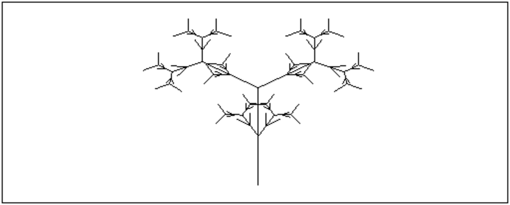
Voici des fougères :
//une fougere par ex fougere(-2*i,2*i)
fougere(x,y):={
local a,L;
L:=NULL;
if (abs(x-y)<0.2) {return segment(x,y);}
a:=x+(y-x)*0.15*exp(-i*0.2);
L:=L,segment(x,a);
L:=L,fougere(a,a+(y-x)*0.33*exp(i*1.2));
L:=L,fougere(a,a+(y-x)*0.33*exp(-i*1.2));
L:=L,fougere(a,a+(y-x)*0.85*exp(-i*0.2));
return L;
}:;
//par ex fougeres(-2*i,2*i,0.05,6)
fougeres(x,y,t,n):={
local a,L;
if (n==0) {return segment(x,(x+y)/2);}
//a:=x+(y-x)*0.15*exp(-i*t);
a:=x+(y-x)*0.15;
L:=NULL;
L:=L,segment(x,a);
L:=L,fougeres(a,a+(y-x)*0.33*exp(i*1.2),t,n-1);
L:=L,fougeres(a,a+(y-x)*0.33*exp(-i*1.2),t,n-1);
L:=L,fougeres(a,a+(y-x)*0.85*exp(-i*t),t,n-1);
return L;
}:;
On tape : fougere(-2*i,2*i)
On obtient :

On tape : fougeres(-2*i,2*i,0.05,6)
On obtient :
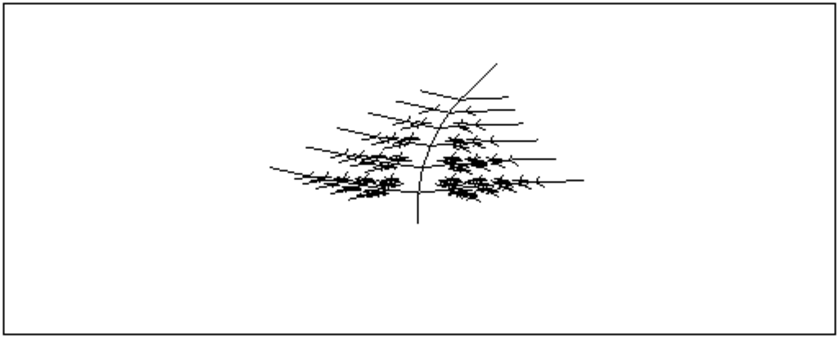
Et enfin, le bouquet final :
//et le bouquet final bouquet(0,2*i)
bouquet(x,y):={
local L;
L:=NULL;
if (abs(x-y)<0.1) {return segment(x,y);}
L:=L,segment(x,(x+y)*0.5);
L:=L,bouquet((3*x+y)/4,(3*x+y)/4+(y-x)*0.25*exp(i*0.5));
L:=L,bouquet((3*x+y)/4,(3*x+y)/4+(y-x)*0.25*exp(-i*0.5));
L:=L,bouquet((x+y)/2,(x+y)/2+(y-x)*0.5*exp(i));
L:=L,bouquet((x+y)/2,(x+y)/2+(y-x)*0.5*exp(-i));
L:=L,bouquet((x+y)/2,(x+y)/2+(y-x)*0.5);
return L;
}:;
On tape : bouquet(0,2*i)
On obtient :
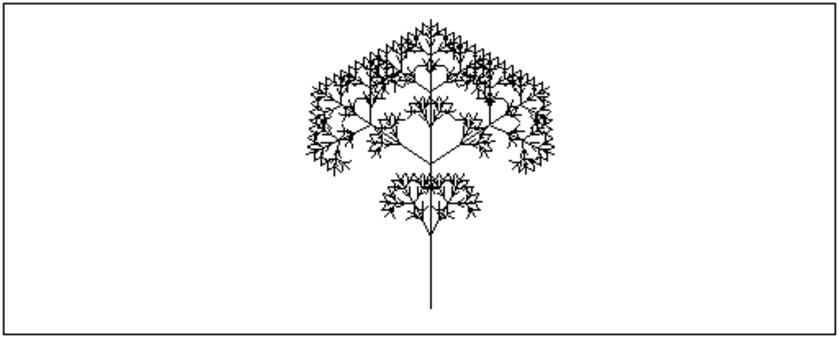